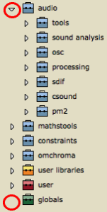
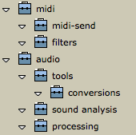
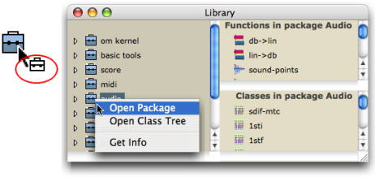
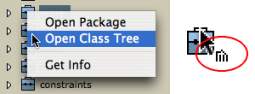

OpenMusic DocumentationHiérarchie de section : OM 6.6 User Manual > The OM Environment > Library > Packages
OpenMusic DocumentationHiérarchie de section : OM 6.6 User Manual > The OM Environment > Library > Packages
Navigation : page précédente | page suivante
Attention, votre navigateur ne supporte pas le javascript ou celui-ci à été désactivé. Certaines fonctionnalités de ce guide sont restreintes.
Packages
Package
A package represents a category of programming tools that encloses related functions and classes. It can be organized in sub packages.
Packages of the Library Window
Each package is represented by a small suitcase.
The OM Packages are the most numerous. They contain classes[1] and functions[2] predefined in OM. OM Packages are defined thematically. For instance, the Score package contains classes that are literally dedicated to the score domain, such as chords, notes, polyphonies, and functions that can perform operations upon these classes. These packages and their content are "protected" and cannot be modified by the user. The User Package can receive user-defined classes and functions, which can be dispatched in dedicated sub packages. These classes and functions can be modified. The User Libraries package encloses a set of additional libraries that can be added or loaded dynamically.
If a package is supposed to contain sub packages, it features an adjacent triangle that allows to open a package on List mode . When this triangle is clicked, the package unfolds and displays its inner sub packages – see below. |

|
About Global Variables
About User Libraries
Getting Information
To get information about a select package, class or function of the library, use the Info window :
-
Ctrl/ right click on an item and chooseGet Info - select
File / Get Info - press
Cmd+i.
Information related to the items of the User package can also be edited.
Packages Content
A package gives access to both functions and classes of a common "theme", or category of tools. Packages contents can be displayed in 'Package' mode or ' Class Tree' mode .
The default presentation allows to get a global view of a package whole organization in sub packages. Classes and functions contained in the sub packages cannot be accessed, though. |

Displaying packages in the Library window. We can see sub packages, but classes and functions cannot be accessed.
|
Opening Packages in Package Mode
The Package mode allows to access the set of tools contained in a package as a whole : sub packages cannot be visualized.
-
Ctrl/ right click on the suitcase and chooseOpen Package. - Double click on the lower part of the suitcase.
The window extends to display two side panels, respectively containing the package's functions and classes.
Their content is refreshed at the selection of another package.

Opening Packages in Class Tree Mode
A " class tree " shows the inheritance between the classes of a common package.
|

|
The class tree is displayed in a new window. Class trees of the User sub packages can be created and modified graphically.

More Information about Class Trees and User Defined Material
Using Classes and Functions from the Libary
Dropping Items in Patches
Tools can be dropped in patches from the library window. |
{kind=link}
Using the OM menus
Note that the OM Functions and Classes menus are organized following the Library packages structure, and can also be used to select items from the different OM packages.
Adding boxes into a patch
Références :
Class
A category of objects sharing common properties – characteristics and behaviour. A class specifies the internal structure and behaviour of an object. In OM, it is represented in a patch by a factory box that can produce an instance of a class.
See also : Object, Instance
Function
A portion of code within a larger program, which performs a specific task. Operates upon 0 or more parameters and returns a value.
Global variable
An instance of OM object that has been saved in order to be used in other programs. Global variables are visible from the
Librarywindow and stored as .omi files in theGlobalsfolder of the workspace.Generic Function
In object oriented programming, a generic function is a collection of methods – elementary specialized functions – with the same name and argument structure, but with arguments typed differently.
See also : Method
Plan :
Navigation : page précédente | page suivante
A propos...(c) Ircam - Centre Pompidou